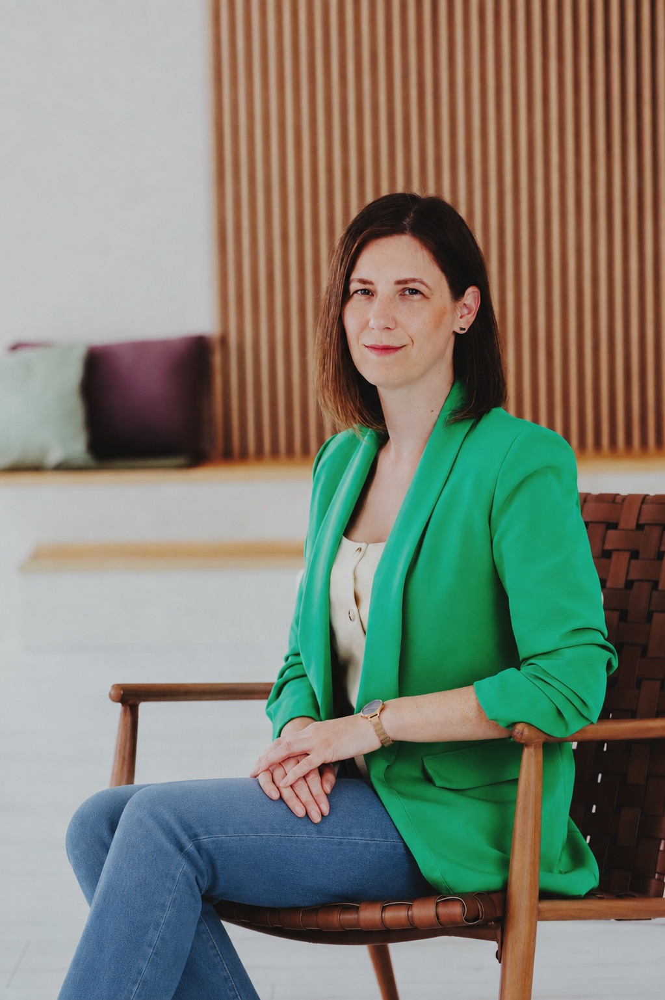

Keresnyei Krisztina PhD
Segítő beszélgetések azoknak,
akik szeretnék tisztábban látni működésüket,
és saját ritmusukban közelebb kerülni a változáshoz

Rólam
Számomra a tudásszerzés iránti igény (lifelong learning) egy életforma. Az évek alatt a kezdeti, pusztán lelkesedésből fakadó tanulás helyett most már tudatosabb vagyok abban, hogy milyen elvek mentén képzem magam. Első coach képzésemet 2016-ban végeztem el, és azóta sem álltam meg, folyamatosan fejlesztem magam képzéseken és az ügyfeleim által is. Hiszem, hogy ez egy olyan kapcsolódás, amit soha nem fogok megunni.
Tovább olvasom
Pontosan emlékszem a pillanatra, amikor eldöntöttem, hogy egyszer majd én is coach leszek. 23 éves voltam, és Hollandiában tanultam Erasmussal, ahol a külföldi hallgatóknak is lehetőségük volt konzultációra járni kinti tanáraikhoz. Ezek elsősorban mentális segítő beszélgetések voltak: sok kérdéssel, önreflexióval igyekezett a tanárom, mentorom segíteni a nehéz érzések és a belső vívódásaim oldásában. Ez a hallgatói rendszer aztán annyira megfogott, hogy hazatérve a szakdolgozatomat is a coaching jellemzőiből és az ottani rendszer felépítéséből írtam.
Az már akkoriban is foglalkoztatott, hogy a megtanult elméletek hogyan tudnak a gyakorlatban is valóban hasznosulni, azt hiszem, itt kezdődött meg identitásom fő elemének kialakulása, amit a tanulás, kutatás, gyakorlati alkalmazás háromszögeként tudnám legjobban leírni. Munkámban is erősen vágyom arra, hogy megértsem a velem kapcsolatban állók működését, és ezzel az értelemmel segítsem őket fejlődésükben, ugyanakkor a többéves tapasztalatszerzésem során megtanultam türelemmel, empátiával és elfogadással viszonyulni a változások tempójához, időt és teret engedni a gyakorlatban történő alkalmazásra, mely jóval túlmutat az ügyfél esetében akár egy-egy konzultációs folyamaton is.
Főbb képzési mérföldkövek az életemben
Korábbi képzések
Szakmai publikációim
A kreativitás értelmezések sokszínűsége 2012
Hatékony időgazdálkodás az érzelmileg intelligens coaching alkalmazásával 2010Tapasztalataim
Korábbi tapasztalatok
Szolgáltatások
Mental Studio Önismeretből erő
Beszélgetések, melyekben van irány és tér is
Egyéni konzultáció
Az egyéni konzultációban ötvözöm a coaching és a mentális segítő beszélgetések erejét. Egy olyan folyamatban kísérlek, amelynek célja van, ugyanakkor teret enged a változás saját ütemének, a belső megélésnek és az elcsendesedésnek, hogy a valóban fontos kérdések kerülhessenek a felszínre. A közös munka során nem csupán a problémák átbeszélésére törekszünk, hanem a működési minták feltárásán és saját működésünk mélyebb megértésén keresztül az önismeretet is fejlesztjük. A cél nem pusztán a jobb megértés, hiszen önmagában a gondolat még nem eredményez változást: a tényleges elmozdulást az segíti, ha erősödik a cselekvőképesség érzete és képessé válunk a saját lehetőségeink felismerésére.
Egy konzultáció hossza 75 perc, melyet tarthatunk személyesen vagy online is. A konzultációk száma a feltárt témáktól függ, egyéni igény szerint alakítható.
Sport mentál coaching / Utánpótlás mentál coaching
Fókuszált mentális támogatás sportolóknak teljesítményhelyzetekhez, önbizalom-erősítéshez és elakadások kezeléséhez. A közös munka célja, hogy tudatosabban működj, jobban kezeld a nyomást, és stabilabban kapcsolódj a saját erőforrásaidhoz.
Szívesen fogadom az utánpótláskorú sportolókat is, hogy már fiatal korban kialakulhasson az a mentális stabilitás és önismeret, amely hosszú távon is támogatja őket a sportban és a mindennapokban.
Sportszülő, edző konzultáció
A sportoló fejlődésére az őt körülvevő környezet is jelentős hatással van. A konzultáció során szülőkkel és edzőkkel közösen dolgozunk azon, hogy olyan kommunikációs és mentális eszközöket találjunk, amelyek hatékonyan támogatják a sportoló fejlődését, jóllétét és teljesítményét.
A cél egy kiszámítható, támogató közeg kialakítása, ahol a fejlődést segítő szemlélet és a megfelelő kapcsolódás egyaránt helyet kap. Ehhez sok esetben a saját működésünk és reakcióink tudatosítása is fontos kiindulópont.
Ultrarövid Terápia a coachingban
Az Ultrarövid Terápia® a coachingban Buda László nevével jelzett módszertani keretrendszer, melynek célja, hogy gyors, mély és lényegre törő módon foglalkozzon a múlt bennünk lévő utóhatásaival, segítsen meghozni a változásról való döntést és képessé tegyen minket, hogy tegyünk egy lépést a belső szabadság felé. Abban tudlak téged támogatni, hogy megtartalak és jelen vagyok veled, mialatt te a belső világod rendezed, hogy kissé talán könnyebben, kevesebb terhet cipelve indulhass tovább immár a saját utadat járva.
A konzultáció coaching folyamatba ágyazva érhető el. Az alkalom 90–120 percet vesz igénybe.
Mentális jóllét támogatása céges ügyfeleknek
A munkavállalók mentális jólléte közvetlenül hat a teljesítményre, a lojalitásra és a szervezeti kultúrára. Szolgáltatásom keretében cégek számára biztosítok egyéni coachingot és mentális segítő beszélgetéseket, amelyek támogatják a munkatársakat a stresszkezelésben, a kiégés megelőzésében és a mindennapi munkahelyi kihívások kezelésében.
Egyéni árajánlatért érdeklődj a megadott elérhetőségek egyikén.
Ingyenes nulladik alkalom
A konzultáció megkezdése előtt egy 20–30 perces ingyenes ismerkedő beszélgetés során feltérképezzük, hogyan tudlak támogatni.
KapcsolatfelvételÁrak
Árak és időtartamok
A konzultációk online vagy személyesen Pécsen érhetőek el.
Blog